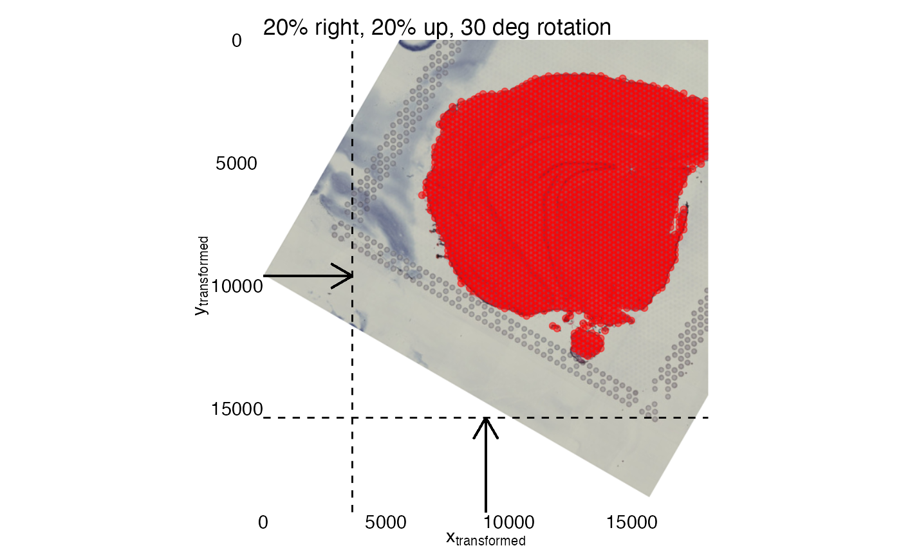
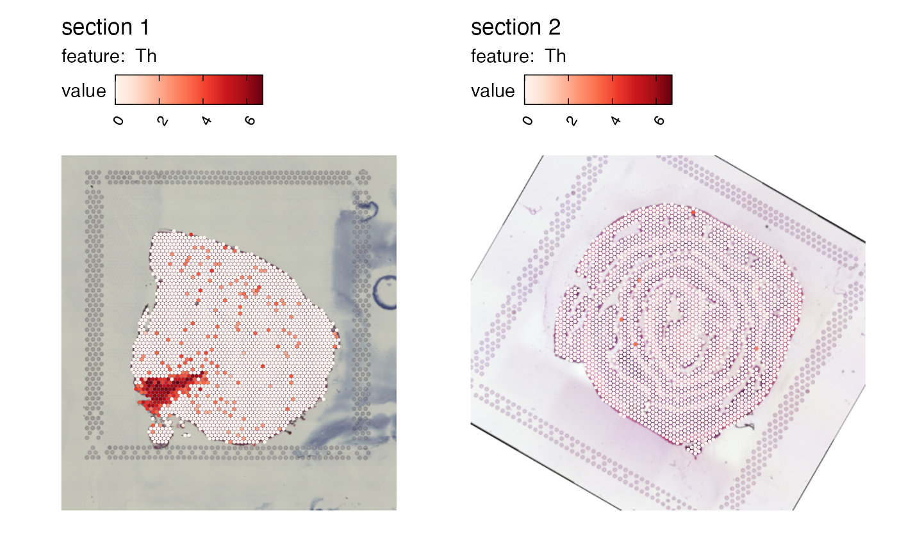
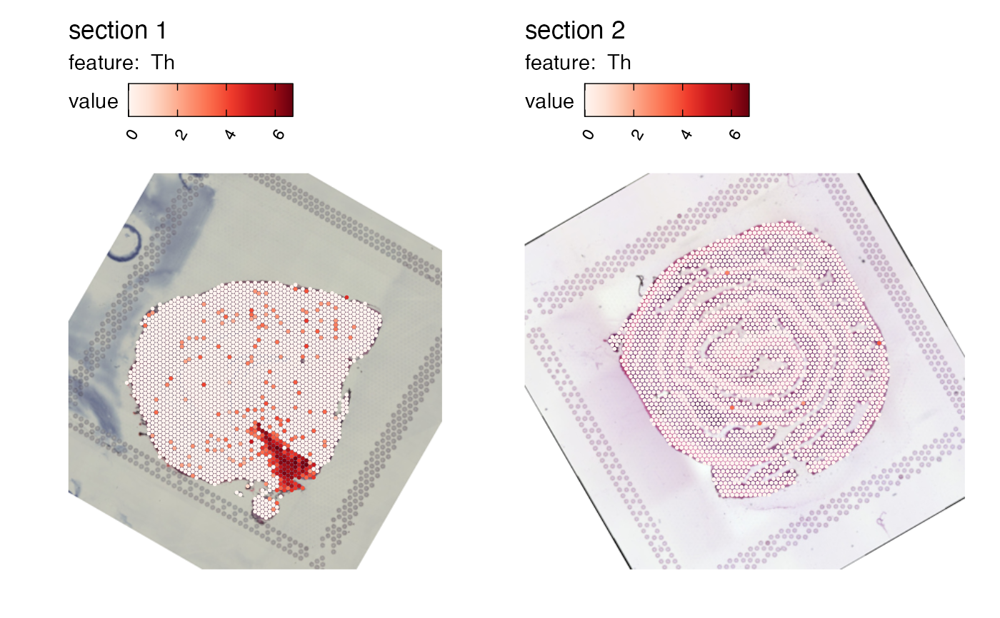

Apply rigid transformations to images
transform-images.RdApply rigid transformations to images
Usage
RigidTransformImages(object, ...)
# S3 method for default
RigidTransformImages(object, image, xy_coords, verbose = TRUE, ...)
# S3 method for Seurat
RigidTransformImages(object, transforms, verbose = TRUE, ...)Arguments
- object
An object
- ...
Arguments passed to other methods
- image
an image of class
magick-image,raster,StoredSpatialImageor a path to an image in PNG or JPEG format- xy_coords
spot coordinates that can be mapped to
image- verbose
print messages
- transforms
a tibble containing information about the transformations to apply to the images (see Seurat section)
Value
A list with two elements:
"im_transf": An object of class
magick-imagerepresenting the transformed image"xy_transf": An object of class
tblrepresenting the transformed coordinates
default method
Object is a tibble containing information about the image dimensions that are
matched with xy_coords. The coordinates xy_coords do not have to
match the input image as long as the image dimensions in object are matched.
This is to ensure that the coordinates can be transformed correctly regardless of the
dimensions of the image. For example, the coordinates provided by spaceranger
in "tissue_positions.csv" can be mapped to the original H&E image and therefore the
original H&E image dimensions are required to correctly specify the dimensions
when using these coordinates for plotting. Doing so, we can map the coordinates
correctly on the H&E image regardless of its size.
The required columns are:
full_width, full_height: the dimensions of the image thatxy_coordsmap tosampleID: an integer specifying a sample IDmirror_x, mirror_y: TRUE/FALSE specifying if the image should be mirrored along the x- and/or y-axisangle: a numeric specifying an angle to rotate the image by in degreestr_x, tr_y: numeric values specifying translations along the x- and/or y-axis.tr_x, tr_yhave to be values between -1 and 1 where 0 means no translation and 1 is equal to the image width or height. Negative values will shift the image along the axis in the opposite direction. For example, settingtr_x = 0.5will move the image 50 to the right and settingtr_x = -0.5will move the image 50
See also
Other image transformations:
MaskImages(),
RunAlignment()
Other transforms:
CoordAndImageTransform(),
CoordMirror(),
CoordTransform(),
ImageTranslate(),
RunAlignment()
Examples
library(semla)
library(tibble)
library(dplyr)
library(magick)
library(patchwork)
library(ggplot2)
transforms <- generate_rigid_transform(mirror_x = TRUE, angle = 30, tr_x = 0.2, tr_y = -0.2)
# Combine image dimensions with transforms.
# These are the dimensions of the H&E image used as input for
# spaceranger count.
transforms <- tibble(full_width = 18107, full_height = 19242) |>
bind_cols(transforms)
transforms
#> # A tibble: 1 × 9
#> full_width full_height sampleID mirror_x mirror_y angle tr_x tr_y scalefac…¹
#> <dbl> <dbl> <dbl> <lgl> <lgl> <dbl> <dbl> <dbl> <dbl>
#> 1 18107 19242 1 TRUE FALSE 30 0.2 -0.2 1
#> # … with abbreviated variable name ¹scalefactor
# get example coordinate file
coordinatefile <- system.file("extdata/mousebrain/spatial",
"tissue_positions_list.csv",
package = "semla")
# Load coordinates
# These coordinates are defined on the H&E image used as input for
# spaceranger count.
xy <- LoadSpatialCoordinates(coordinatefiles = coordinatefile)
#> ℹ Loading coordinates:
#> → Finished loading coordinates for sample 1
#> ℹ Collected coordinates for 2560 spots.
xy
#> # A tibble: 2,560 × 7
#> barcode selected y x pxl_row_in_fullres pxl_col_…¹ sampl…²
#> <chr> <int> <int> <int> <int> <int> <int>
#> 1 CATACAAAGCCGAACC-1 1 13 35 4117 6086 1
#> 2 CTGAGCAAGTAACAAG-1 1 15 25 4472 5062 1
#> 3 GGGTACCCACGGTCCT-1 1 14 26 4294 5164 1
#> 4 ACGGAATTTAGCAAAT-1 1 15 27 4472 5266 1
#> 5 GGGCGGTCCTATTGTC-1 1 14 28 4294 5369 1
#> 6 ATGTTACGAGCAATAC-1 1 15 29 4472 5471 1
#> 7 AACCATGGGATCGCTA-1 1 14 30 4294 5574 1
#> 8 TCGCATCCCTAAGTGT-1 1 15 31 4473 5676 1
#> 9 ACTTAGTACGACAAGA-1 1 14 32 4295 5778 1
#> 10 GAGCTCTCGGACCTAA-1 1 15 33 4473 5881 1
#> # … with 2,550 more rows, and abbreviated variable names ¹pxl_col_in_fullres,
#> # ²sampleID
# Load image
lowresimagefile <- system.file("extdata/mousebrain/spatial",
"tissue_lowres_image.jpg",
package = "semla")
im <- image_read(lowresimagefile)
# Transform image and coordinates
transf_res <- RigidTransformImages(transforms, image = im, xy_coords = xy)
#> ℹ Fetched spot coordinates
#> ℹ Supplied transformations are valid
#> → Mirror along x-axis: TRUE
#> → Mirror along y-axis: FALSE
#> → Rotation angle: 30
#> → Translation along x axis: 20%
#> → Translation along y axis: -20%
#> → Scaling factor: 1
#> ✔ Returning transformed image
ggplot(transf_res$xy_transf, aes(tr_x, tr_y)) +
geom_point(color = "red", alpha = 0.5) +
geom_segment(aes(x = 0, y = 0.5*19242, xend = 0.2*18107, yend = 0.5*19242),
arrow = arrow(length = unit(0.5, "cm"))) +
geom_vline(xintercept = 0.2*18107, linetype = "dashed") +
geom_segment(aes(x = 0.5*18107, y = 19242, xend = 0.5*18107, yend = 0.8*19242),
arrow = arrow(length = unit(0.5, "cm"))) +
geom_hline(yintercept = 0.8*19242, linetype = "dashed") +
scale_x_continuous(limits = c(0, 18107), expand = c(0, 0)) +
scale_y_reverse(limits = c(19242, 0), expand = c(0, 0)) +
labs(x = expression("x"["transformed"]),
y = expression("y"["transformed"]),
title = "20% right, 20% up, 30 deg rotation") +
theme_void() +
theme(axis.text = element_text(),
axis.title.x = element_text(),
axis.title.y = element_text(angle = 90)) +
coord_fixed() +
# Insert H&E image
inset_element(p = as.raster(transf_res$im_transf),
left = 0, bottom = 0,
right = 1, top = 1,
on_top = FALSE)
#> Warning: Removed 27 rows containing missing values (`geom_point()`).

library(semla)
library(dplyr)
se_mbrain <- readRDS(system.file("extdata/mousebrain", "se_mbrain", package = "semla"))
se_mcolon <- readRDS(system.file("extdata/mousecolon", "se_mcolon", package = "semla"))
se_merged <- MergeSTData(se_mbrain, se_mcolon) |>
LoadImages()
#>
#> ── Loading H&E images ──
#>
#> ℹ Loading image from /private/var/folders/zb/1fj07x_5343fvs_k28gnm1z80002xs/T/RtmpqFZoOI/temp_libpatha4b06128c49e/semla/extdata/mousebrain/spatial/tissue_hires_image.jpg
#> ℹ Scaled image from 2000x1882 to 400x376 pixels
#> ℹ Loading image from /private/var/folders/zb/1fj07x_5343fvs_k28gnm1z80002xs/T/RtmpqFZoOI/temp_libpatha4b06128c49e/semla/extdata/mousecolon/spatial/tissue_hires_image.jpg
#> ℹ Scaled image from 1804x2000 to 400x443 pixels
#> ℹ Saving loaded H&E images as 'rasters' in Seurat object
# Define rigid transformations for section 2
transforms <- generate_rigid_transform(sampleID = 2, angle = 30, mirror_x = TRUE)
# Apply transformations
se_merged <- RigidTransformImages(se_merged, transforms = transforms)
#>
#> ── Transforming images ──
#>
#> ℹ Found transformations for sample(s): 2
#> ℹ Transforming image 2
#> ℹ Fetched spot coordinates
#> ℹ Supplied transformations are valid
#> → Mirror along x-axis: TRUE
#> → Mirror along y-axis: FALSE
#> → Rotation angle: 30
#> → Translation along x axis: 0%
#> → Translation along y axis: 0%
#> → Scaling factor: 1
#> ✔ Returning transformed image
#> ℹ Image transformation complete.
# Plot transformed image
MapFeatures(se_merged, features = "Th", image_use = "transformed")

# Define rigid tranformations for all sections
transforms <- bind_rows(generate_rigid_transform(sampleID = 1, angle = 30, mirror_x = TRUE),
generate_rigid_transform(sampleID = 2, angle = 60))
# Apply transformations
se_merged <- RigidTransformImages(se_merged, transforms = transforms)
#>
#> ── Transforming images ──
#>
#> ℹ Found transformations for sample(s): 1, 2
#> ℹ Transforming image 1
#> ℹ Fetched spot coordinates
#> ℹ Supplied transformations are valid
#> → Mirror along x-axis: TRUE
#> → Mirror along y-axis: FALSE
#> → Rotation angle: 30
#> → Translation along x axis: 0%
#> → Translation along y axis: 0%
#> → Scaling factor: 1
#> ✔ Returning transformed image
#> ℹ Transforming image 2
#> ℹ Fetched spot coordinates
#> ℹ Supplied transformations are valid
#> → Mirror along x-axis: FALSE
#> → Mirror along y-axis: FALSE
#> → Rotation angle: 60
#> → Translation along x axis: 0%
#> → Translation along y axis: 0%
#> → Scaling factor: 1
#> ✔ Returning transformed image
#> ℹ Image transformation complete.
# Plot transformed image
MapFeatures(se_merged, features = "Th", image_use = "transformed")
